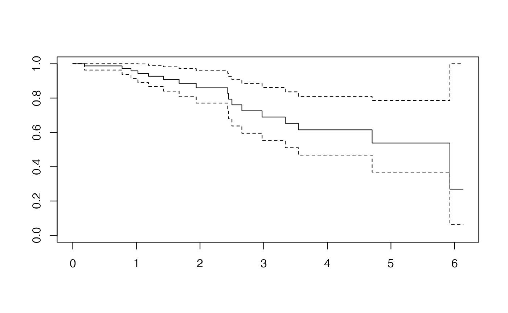

This function computes the residuals from a null model fit using the
coxph function of the mixOmics's package.
Since this computation does not use the explanatory variables, it is
likely to be doable even on big dat without dedicated framework.
computeDR( time, time2, event, type, origin, typeres = "deviance", collapse, weighted, scaleY = TRUE, plot = FALSE )
| time | for right censored data, this is the follow up time. For interval data, the first argument is the starting time for the interval. |
|---|---|
| time2 | The status indicator, normally 0=alive, 1=dead. Other choices
are |
| event | ending time of the interval for interval censored or counting
process data only. Intervals are assumed to be open on the left and closed
on the right, |
| type | character string specifying the type of censoring. Possible
values are |
| origin | for counting process data, the hazard function origin. This option was intended to be used in conjunction with a model containing time dependent strata in order to align the subjects properly when they cross over from one strata to another, but it has rarely proven useful. |
| typeres | character string indicating the type of residual desired.
Possible values are |
| collapse | vector indicating which rows to collapse (sum) over. In
time-dependent models more than one row data can pertain to a single
individual. If there were 4 individuals represented by 3, 1, 2 and 4 rows of
data respectively, then |
| weighted | if |
| scaleY | Should the |
| plot | Should the survival function be plotted ? |
Residuals from a null model fit.
TODO
Frédéric Bertrand
frederic.bertrand@lecnam.net
https://fbertran.github.io/homepage/
library(plsRcox) data(micro.censure) Y_train_micro <- micro.censure$survyear[1:80] C_train_micro <- micro.censure$DC[1:80] Y_DR <- computeDR(Y_train_micro,C_train_micro) Y_DR <- computeDR(Y_train_micro,C_train_micro,plot=TRUE)